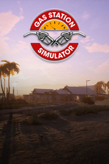

 |
|
| Tiempo de juego | No Jugado |
| Última actividad | Nunca |
| Añadido | 16/10/2025 18:09:30 |
| Modificado | 17/10/2025 2:15:57 |
| Estado de finalización | Not Played |
| Librería | Playnite |
| Fuente | 2TB DATOS |
| Plataforma | Macintosh PC (Windows) |
| Fecha de lanzamiento | 15/09/2021 |
| Puntuación de la Comunidad | 86 |
| Puntuación de la Crítica | 72 |
| Puntuación de usuario | |
| Género | Casual Indie Simuladores |
| Desarrollador | DRAGO entertainment |
| Editor | DRAGO entertainment HeartBeat Games Shochiku |
| Característica | Cloud Saves Compat. Total Con Mando Cromos De Logros De Préstamo Familiar Un Jugador |
| Enlaces | Punto de encuentro Discusiones Guías Noticias Página de la tienda PCGamingWiki Logros |
| Tag | Casuales Conducción Construcción Construcción de bases Destrucción Diseño e ilustración Divertidos Economía Educación Física Gestión Indie Las elecciones importan Memes Mundo abierto Primera persona Realistas Relajantes Simulación Un jugador |
Gas Station Simulator va sobre renovar, expandir y llevar una gasolinera en una autopista en medio del desierto. La libertad de decidir y las múltiples opciones que tendrás para dirigir tu negocio y lidiar con la presión son ingredientes claves en este juego.
Compra una gasolinera abandonada en la mitad de la nada y devuélvele toda su gloria. Desházte del escombro y del mobiliario roto, arregla las paredes, pinta y decora el lugar como desees. Pero no gastes todo tu dinero en la apariencia nada más empezar; has comprado una gasolinera, al fin y al cabo. Repara el equipo, compra lo que no puedas reparar y empieza a servir a tus clientes para ganar dinero para más reformas y mejoras.
No hace falta que pienses en pequeño. Puedes expandir tu gasolinera para poder servir a más clientes. Además, una gasolinera no solo se trata de vender gasolina. Puedes expandir la lista de servicios que ofreces a tus clientes y así, atraer a una variedad mayor. Tienes varias opciones de expansión a tu disposición, desde las más pequeñas como aseos o como una simple tienda para cumplimentar tus ganancias, hasta las más grandes como un taller para reparar coches o incluso un lavacoches. Hay unas cuantas opciones y la mayoría de expansiones pueden ser, a su vez, expandidas. Tienes mucho que hacer aquí.
Restaurar tu gasolinera es una cosa, pero darle un toque personal es otra. El juego ofrece una gran lista de opciones para personalizar lo que construyas y muchas decoraciones para realzar la singularidad del lugar. Algunas decoraciones se pueden comprar, otras se adquieren a través del gameplay. No solo se trata de hacer que la gasolinera esté bonita. Cuanto más impresionante sea tu gasolinera, más clientes se fijarán en ella.
Atender a tus clientes es clave para dirigir tu gasolinera con éxito. Todos esperan que sus coches sean repuestos, sus compras hechas al momento, y no son muy pacientes ni siquiera cuando se trata de reparar sus vehículos. Vas a estar lidiando con mucha presión debido al tiempo en las horas clave, y tendrás que organizar varias tareas para cuando haya menos caos. Manejar bien tu tiempo y elegir las prioridades de manera correcta te será muy importante para poder mantener a tus clientes felices.
Aunque lo puedes intentar, en la mayoría de los casos, dirigir una gasolinera que ha sido expandida y mejorada, y que ofrece muchos servicios diferentes, puede que termine siendo demasiado solo para ti. Aquí es donde los empleados entran. Puedes contratar incluso a múltiples empleados para que te ayuden en varias tareas en la gasolinera. Los empleados tienen diferentes habilidades y algunos son mejores en algunas tareas que otras. Los empleados también subirán de nivel según las tareas que hagan, y mejorarán con el tiempo.
No puedes vender lo que no tienes. Estar al tanto de tu inventario es importante, y pedir cosas en el momento adecuado por el precio adecuado te ayudará a mantener las ganancias. Para aprovecharte mejor de las oportunidades de precio bajo, puedes construir un almacén y expandirlo para poder tener mayor almacenamiento. Vigilar de cerca tu inventario es crucial, ya que los pedidos toman su tiempo y no vas a querer quedarte sin nada que vender, o incluso peor, sin gasolina.
Creamos el juego para que si te gusta, puedas entrar de lleno en las características de gestión y microgestiones lo que quieras. Sin embargo, si la gestión no es de tu interés, no te forzamos a lidiar con ello de lleno. Eso sí, microgestionar alguno de los aspectos como los suministros o los empleados puede recompensarte, tanto como en cuanto a finanzas como en cuanto a entretenimiento.
Renueva, dirige y expande una gasolinera en el desierto.
Construye nuevos servicios como una taller, una tienda, un almacén o un lavacoches.
Intenta manejar todo tú solo o contrata empleados para que te ayuden.
Eventos interesantes aparte del gameplay base.
Gran cantidad de opciones de personalización y decoración.
Gran cantidad de clientes diferentes, con necesidades y expectaciones varias.
Gran cantidad de opciones de gestión en las que sumergirse.